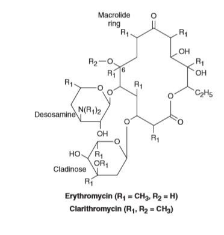
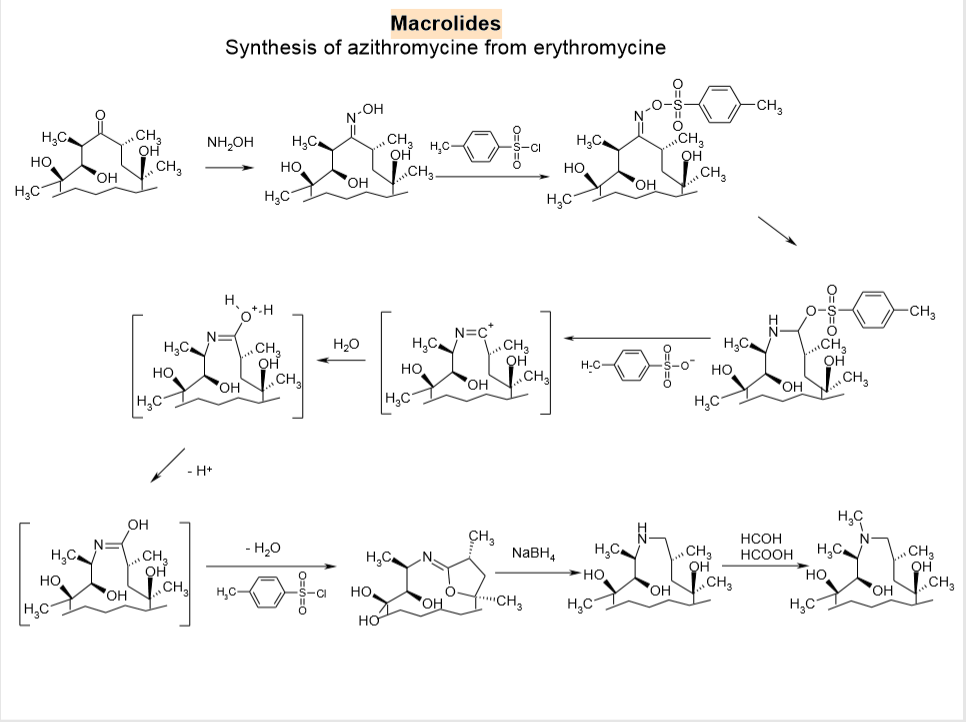
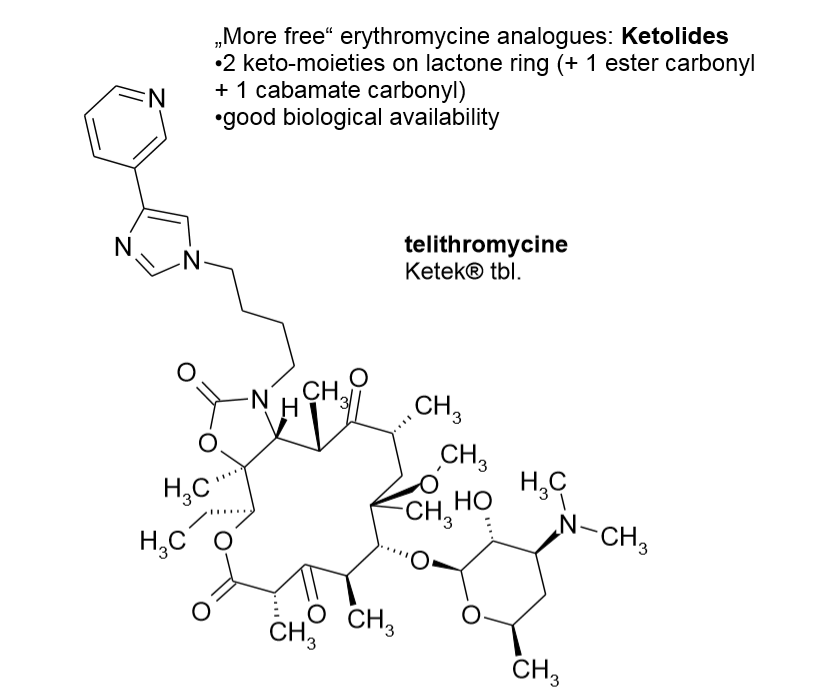
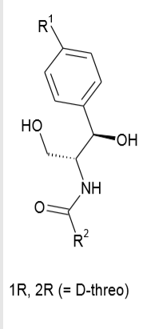
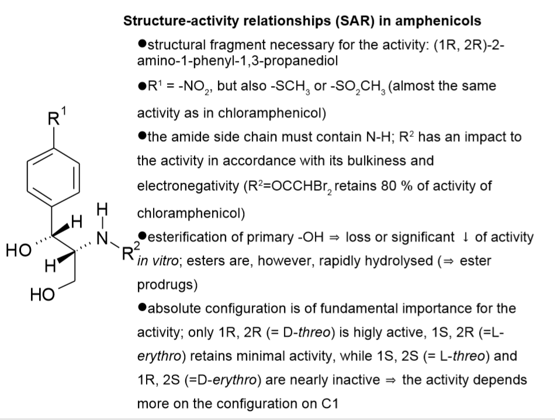
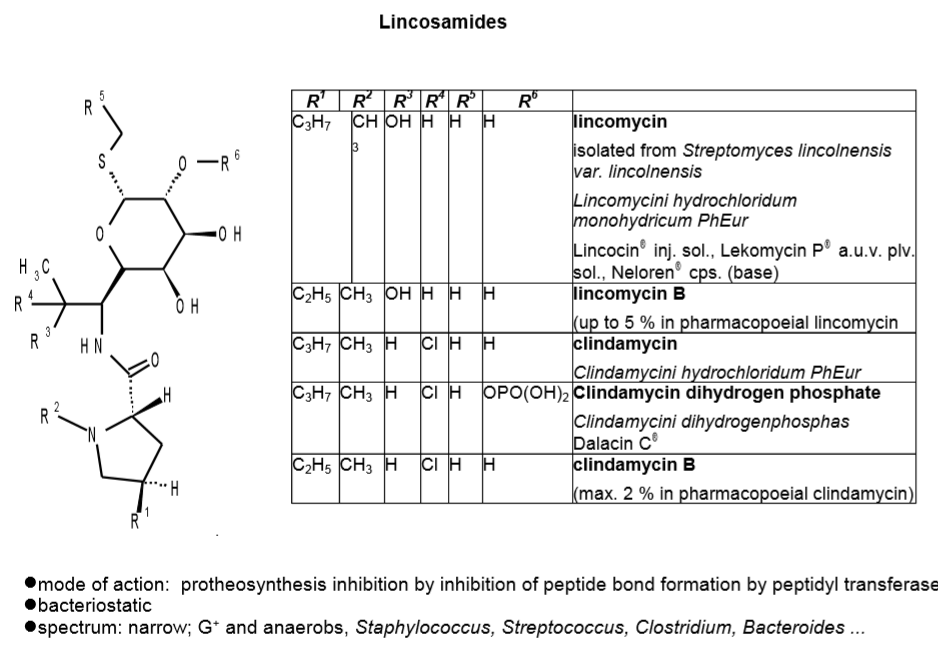
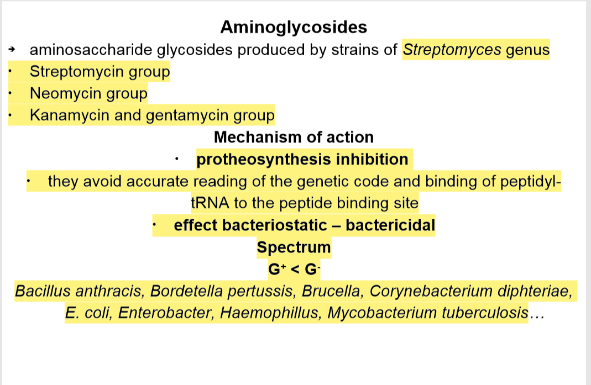
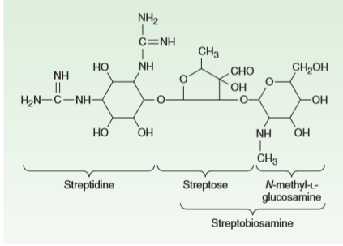
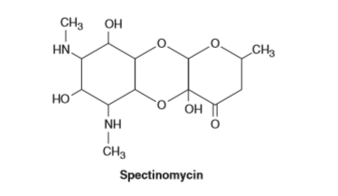
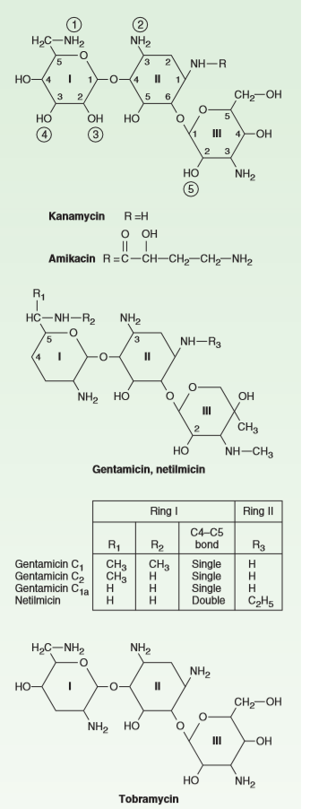

Tetracyclins, amphenicols, aminoglycosides, macrolides, lincosamides
Macrolide antibiotics
→ characteristic large lactone ring
- have two or more characteristic sugars (usually cladinose and desosamine attached 14-membered ring
- carries a substituted amino group → weakly basic
→ biosynthesized from propionic acid units (every second carbon of erythromycin(
- bears a mthexyl group and the rest rings are oxygen bearing
- two carbons so called "extra"oxygen introduced later in the biosynthesis and 2 hydroxyl are glycosylated
→ early macrolides → are chemically unstable because of rapid acid-catalyzed internal cyclic ketal formation, leading to inactivity
- administered in coated tablets
⇒ Macrolides Site and mechanism of action •Proteosynthesis inhibition •act at 50S ribosome subunit •inhibit the translocation of growing peptide from acceptor (A) to peptide (P) site •bacteriostatic effect Spectrum: •both G+ and GNeisseria, Haemophillus, Brahmanella, Legionella …
CLARITHROMYCIN
→ C-6 converted semi to methel ether
- more lipophilic → prevent ketal fromation better blood levels less gastric upset

AZITHROMYCIN
→ called azalide,semisynthetic
→ 15-membered lactone ring
→ an N-methyl-group inserted between C9-C10 and carbonyl moiety is absent
→ does not form a cyclic internal ketal
→ more stable to acid/longer-half-life//greater and longer tissue penetration from erythromycin
- (first day 2 tablets and for the follwoing 5 1 tbls)
→ first choice of treatment among macrolides

TELITHROMYCIN:
→ orally effective
→ treatment of community-asquired pneumonia,acute bacterial excebrations of chronic bronchitis,acute sinusitis.
→ removal of the L-cladonise sugar at C-3 (which associated with the release of motilin and the resulting GI discomfort.
→ oxidation of the free hydroxy group to a nonpolar ketone → ↓ biologocial activity through reducing the binding on domain V BUT
- offset by the addition of the chain at C-11/12 → greatly improves binding to domain II. ⇒ ↓ bacterial resistance

AMINOPHENOLS( Chloramphenicol group)
→ isolated from Streptomyces venezuelae
→•spectrum: both G+ and G-, e.g. Salmonella, Ricketsia, Bordetella pertussis, Neisseria, Haemophilus, Klebsiela, Enterobacter, Staphylococcus aureus, Streptococcus ...
→ mode of action: proteosynthesis inhibition: blocks peptidyltransferase
→ verse effect: irreversible aplastic anaemia ⇒ systemic use strongly limited
→ phthalmo-chloramphenicol // Spersadex gtt. opht.
⇒ R1 = -NO2 R2 = -CHCl2 chloramphenicol
⇒ R1 = -NO2 R2 = -CH2N3 azidamphenicol
⇒ R1 = CH3SO2 - R2 = -CHCl2 thiamphenicol

Structure-activity relationships (SAR) in amphenicols

→ Chloramphenicol prodrugs optimized for particular ways of administration
- loramphenicol sodium succinate Chloramphenicoli natrii succinas PhEur Chloramphenicol ICN plv. inj. sol
- chloramphenicol palmitate Chloramphenicoli palmitas PhEur nearly insoluble in water, bitter taste suppressed
→
LINCOSAMIDES
→ unusual 8-carbon sugar + thiomethyl amino-octoside linked by an amide bond to an n-propyl-substitued N-methylpyrrolidycarboxylic acid
→ weakly basic and form hydrochloric acid salts
→ chemically dinsticly from the macrolides but possess same moa
→ mutually corss-resistance with macrolides
→ extensive live metabolism → resulting primarly N-demethylation (analogues remain biological active)

LINCOMYCIN
→ fermantation of Streptomyces lincolnesis (now prepared synthetically )
→ spectrum: both G+ and G-, e.g. Salmonella, Ricketsia, Bordetella pertussis, Neisseria, Haemophilus, Klebsiela, Enterobacter, Staphylococcus aureus, Streptococcus ...
→ active against G+/anaerobes/
→ reserved for patients who are allergic to penicillin
→ starting material of clindamycin (by Sn-2 reaction that intervs the R stereochemistry of the c-7 hydroxyl to ca c-7 S-chloride)
CLINDAMYCIN
→ substitution of the chloride for the hydroxy group → ↑ bioactive and lipophilic → 90% absorbed via orall admn.
→ C-2 phosphate ester pro-drugs → less painful for IM admin. than lincomycin
→ G+ coccial and espesially in patients that are allergic on β-lactams
→ GI compaints (nausea,vommiting,cramps)
AMINOGLYCOSIDES
→ contain a pharmacophoric- 1,3-diaminoinositol moiety (spectrum,potency,toxicity,pharmacokinetics are function of the specific identity to this unit)
- consisitng either by streptamine (2-deoxystreptamine)
- spectinamine
→ water soluble, basic and form addition salts
→ does not absorbed in significant amounts from the GIT
→ exrected via urine in active form and high concentration
→ more commonly given IM/PERF
→ toxicity potential limits clinical use
→ widely distributed + low levels of protein binding.

STREPTOMYCIN
→ fermentation of Streptomyces girseus
→ treatment of turbeculosis
→ modifed pharmacophore is that the diaminoinositol unit is streptamine
→ also has axial hydroxyl groyp at c-2 + two highly basic guanido group at c-1 + c-3 primary amine
→ resistance due to n-acetylation 0-phosphorilation O adenyltaion of specific functional group

NEOMYCIN GROUP
→ mixture of three compounds produced by fermentation of Streptomyces fradiae [ neomycin B predominating.]
→ preoperative bowel sanitation and the treatment of enteropathogenic Escherichia coli infections
KANAMYCIN GROUP (kanamycin,amikacin,tobramycin,gentamaycin,sisomycin,netilmycin)
KANAMYCIN
→ mixture of at least three components [A,B,C,with A predomination]
→ isolated from Streptomyces kanamycetius
→ most chemically stable
→ heated without loss of activity in acidic+alkaline solutions
→ unstablet o-R-factor enzymes
→ O-phosphorylated on C-3 hydroxyl by enzymes APH3-I and APH3-II
- N-acetylated on C-6 amino group [antibiotically active]
AMIKACIN
→ semi-synthetically from kanamycin A
→ L-hydroxyaminobutyryl amide moeity attached N-3
- inhibit adenylation and phosphorylation in the distant amino sugar ring (C-2/C-3) even if it's not the ezymatmic reaction site
- ↓ R-factor mediated enzymes, ↑ potency & spectrum
tTOBRAMYCIN
→ mixtured produces by fermentation of Streptomyces tenebrarius
→ lacking c3 hydroxyl group
GENTAMYCIN
→ mixture of several antibiotic components produces by Micromonospora purpurea
→ C-1,C-2 and C-1a are the mostos prominent
→ most importan aminoglycoside antibiotic still in use
→ some functionals groups that servers as targets on R factor mediated enzymes are missing → ↑ antibacterial enhance
→ C-2' adenylation C-6' acetylation,C-1,C-2
→ react with each other with β-lactam ( N-acetylation on C-1) → inactivating both antibiotics.
Spectinomycin (Trobicin
→ unusual aminoglycoside antibiotic
→ fermentantion of Streptomyces spectabillis
→ diaminoinositl unti contains
- two mono-N-methyl groups
- hydroxyl opposite stereochemistry than streptomycin
(three-ring structures)
→ bacteriostatic


{kind=link}
{kind=link}
{kind=link}
{kind=link}
{kind=link}
{kind=link}
{kind=link}
{kind=link}
{kind=link}
{kind=link}